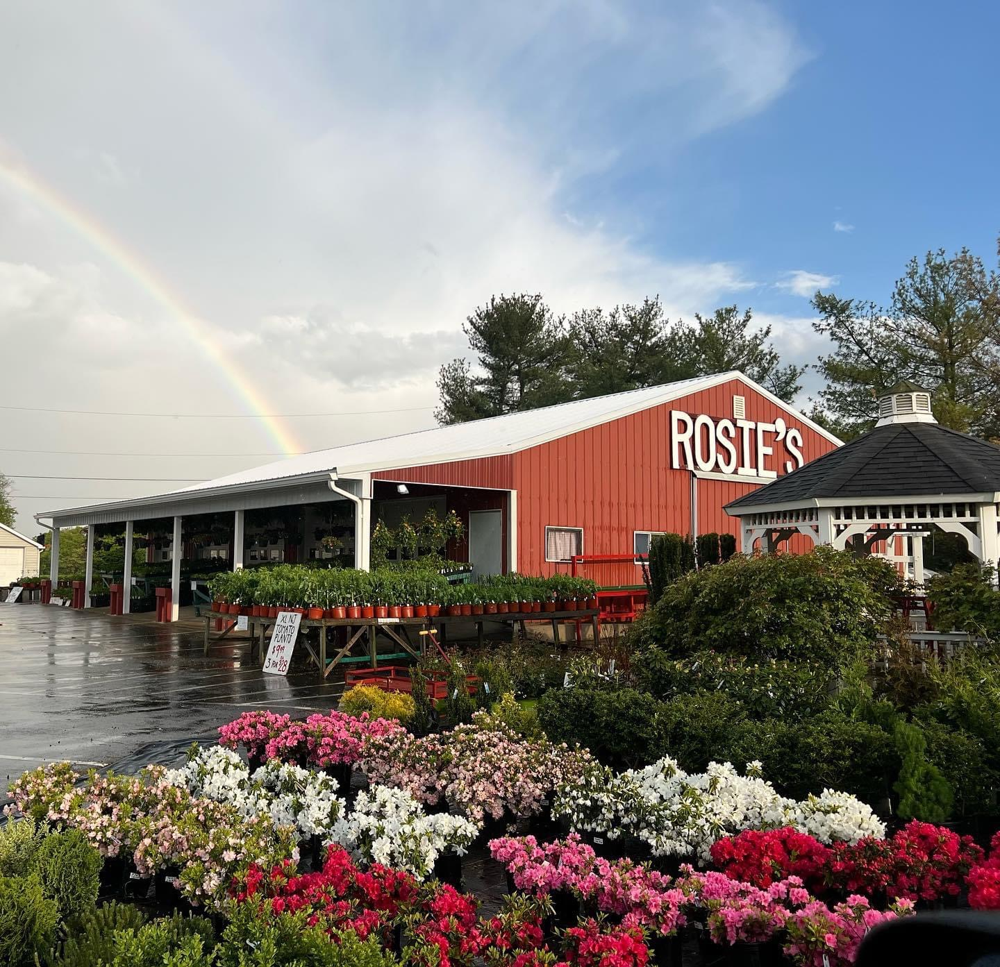
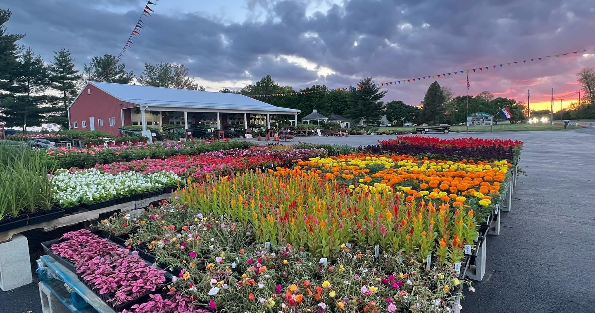

History
History

1933
Palma Rose Morda is born on Palm Sunday in the Southern Italian region of Calabria
1954
Rosie comes to America
1958
Rosie falls in love with Michael Sorbello, they marry six months later
1959
Rosie gives birth to her first daughter, Jennie
1960
Rosie gives birth to her second daughter, Marie
1961
Rosie gives birth to her third daughter, Lisa, and starts selling the over flow of her husband’s crop from under a cherry tree and umbrellas
1962-
1971
Rosie grows her family and the business; giving birth to her son, Rosario, and three more daughters: Carolyn, Diane and Rosie
1954
Rosie comes to America
Michael Sorbello & brothers, 1974

1974
Commodore Barry Bridge replaces the Chester Ferry, increasing traffic and business. The new demand forces Rosie to go pro! She replaces her umbrella with a tin roof and replaces her dirt floor with a concrete slab.
Rosie Sorbello, 1978

1985
The first of 28 grandchildren is born
1988
Rosie builds the market that stands today
1992
Rosie passes away
Rosie's today -
 The Latest News
December 2011 | By: Derrek Sigler, Fruit Grower News
Mullica Hill farm market to celebrate anniversaryJuly 2010 | By: Bob Shryock, Gloucester County Times
Community Involvement
Rosie's supports various charities and organizations.
Stop by and ask us who we are working with this season!
Keep up with Rosie's
Follow us on social media!